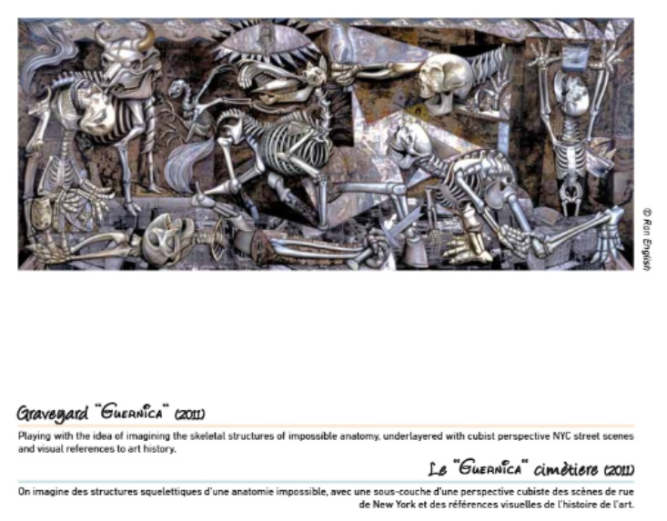
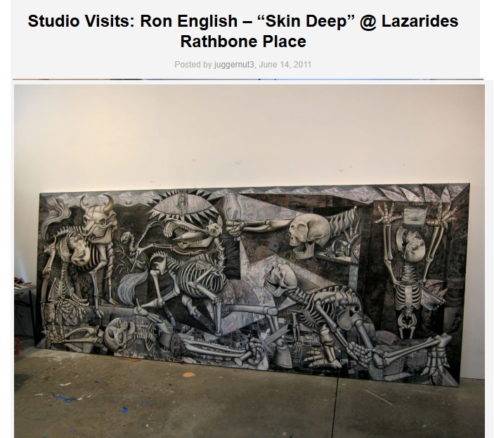
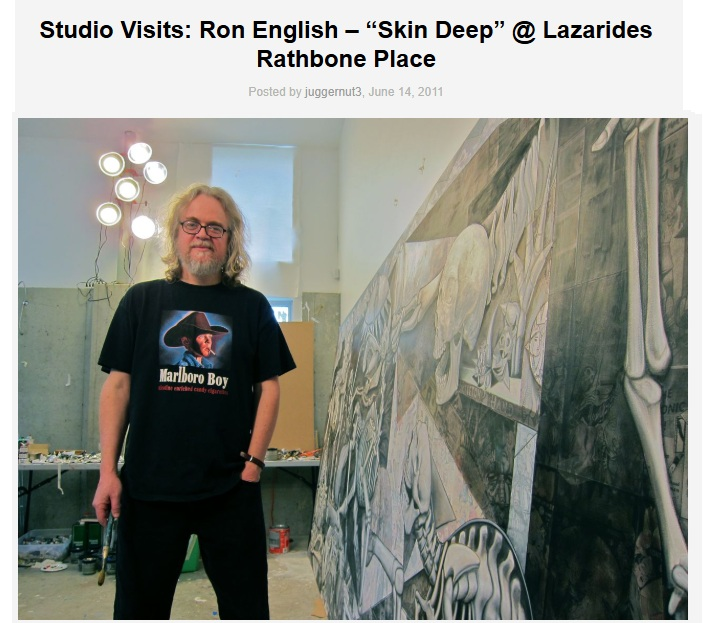
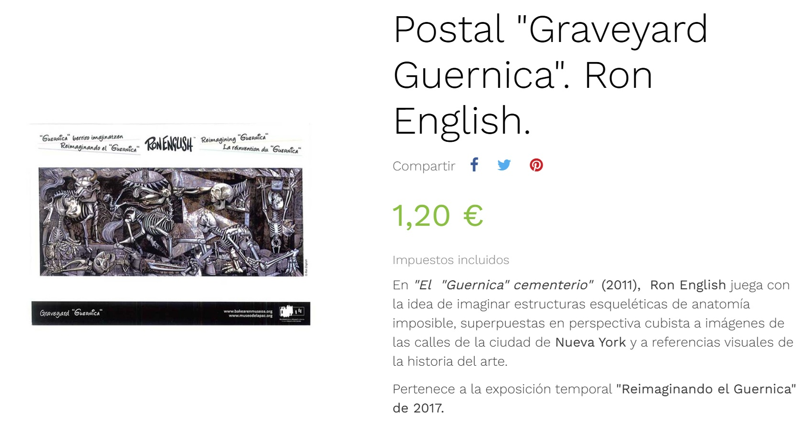
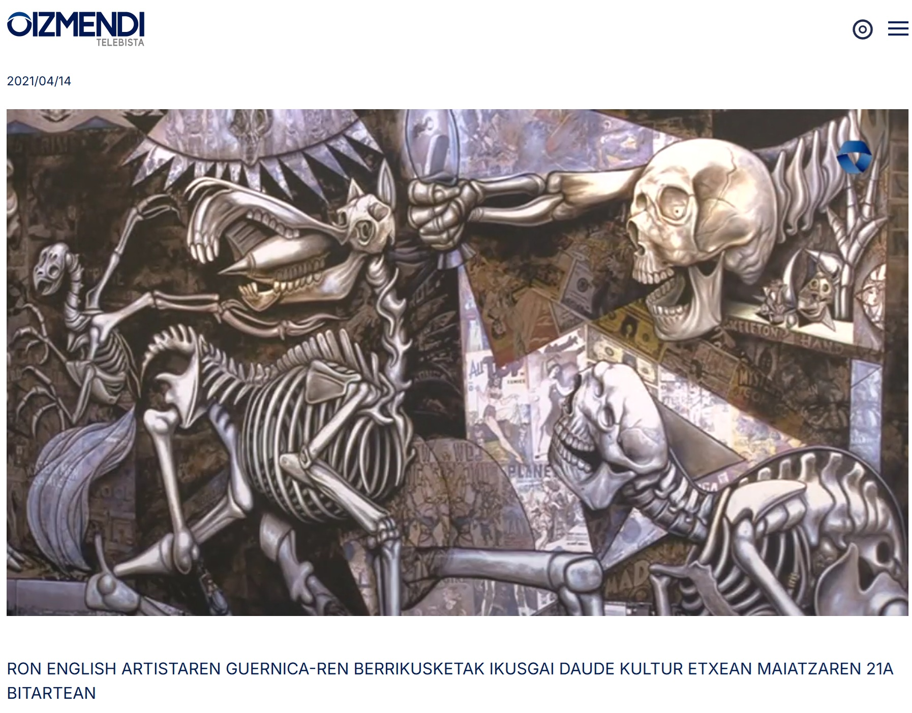

Exhibitions
Skin Deep: Post-Instinctual Afterthoughts on Psychological Portraiture, Lazarides Rathbone, London, United Kingdom, June 24–July 23, 2011.
Graff the Peace! Graff the War!, Opera Gallery, Paris, France, September 13–October 6, 2012.
Reimagining “Guernica†/ La réinvention du “Guernicaâ€, Museo de la Paz de Gernika, Gernika-Lumo, Bizkaia, Spain, April 4–December 10, 2017. The composition was presented as a print on stretched canvas, not as the original painting.
Literature
Ron English, Death and the Eternal Forever (Korero Press, 2014), p. 146. ISBN 978-0957664920.
Ron English, Status Factory: The Art of Ron English (San Francisco: Last Gasp of San Francisco, 2014), p. 138. ISBN 978-0867197891.
Ron English, Original Grin: The Art of Ron English (Paris: Cernunnos, 2019), p. 215. ISBN 978-2374950938.
Notes
This work appears on Artsy’s show page for Skin Deep: Post-Instinctual Afterthoughts on Psychological Portraiture, presented by Lazinc.
The work is documented in the Museo de la Paz de Gernika’s digital exhibition catalogue / flip-book for Ron English: Reimagining “Guernica†/ La réinvention du “Guernicaâ€.
The composition was presented by the Museo de la Paz de Gernika as a postcard reproduction, and the museum shop page describes the 2011 image as playing with impossible skeletal anatomy over cubist-perspective images of New York City streets and visual references from art history.
This work references Pablo Picasso’s Guernica.
The work appears in studio photographs published by Arrested Motion for Ron English’s Skin Deep preparations at Lazarides Rathbone Place.
The work also appears in coverage connected to Reimagining “Guernicaâ€, including REMEMCHILD documentation and an Oizmendi Telebista video appearance at 0:01.
Ancillary Documentation
The following materials document the work through exhibition-page documentation, museum documentation, source-reference imagery, studio photography, postcard reproduction documentation, and video still documentation.








Selected Online Circulation
Selected online documentation related to this work, its exhibition history, source reference, postcard reproduction, video appearance, and later circulation. This list is not exhaustive.